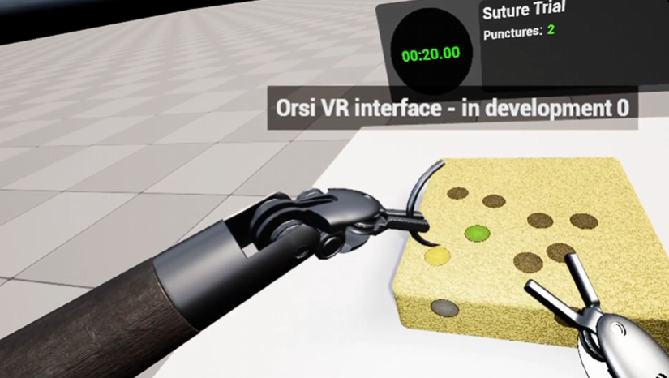
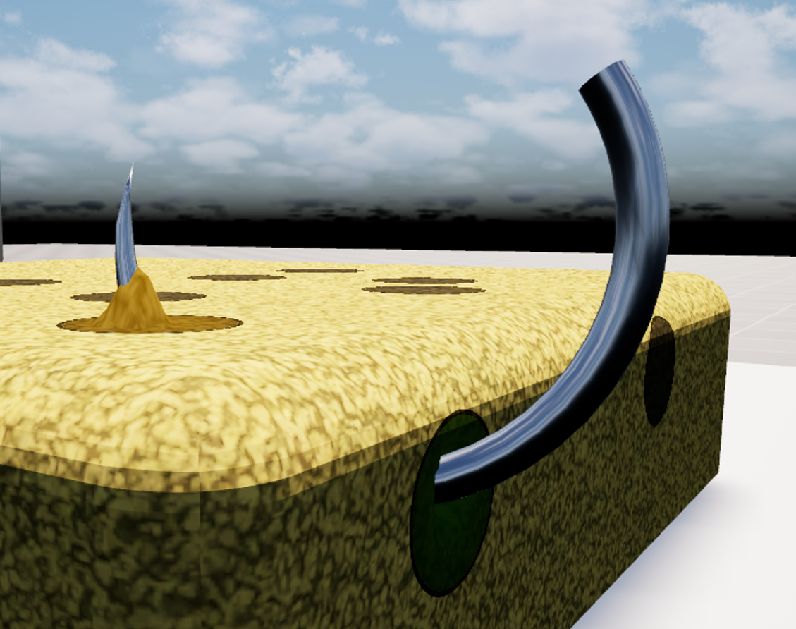
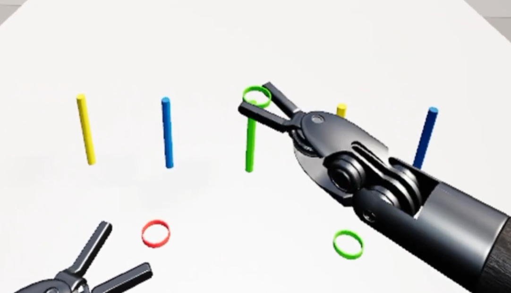

Orsi Surgery Sim
I spent most of my time at OneBonsai working on a VR training simulator for Orsi Academy.
The simulator recreates the controls and behaviour of a robotic surgical system, allowing surgeons to practise its movement and complete exercises in a controlled virtual environment.
My work covered gameplay programming, interaction design, controller communication, bug fixing and processing feedback from surgeons who tested the simulator.
Because this is training software rather than a conventional game, technical accuracy and predictable behaviour were more important than simply making interactions feel convenient.

Suturing Exercise
My largest contribution was the development of a suturing exercise.
I created the needle interaction, entry and exit targets, skin deformation, puncture detection, scoring and the constraints that guide a curved needle through the virtual skin.
The skin deformation was implemented with a custom material and HLSL.
A cubic Bezier curve represents the section of the needle passing through the skin, allowing the material to deform smoothly along the complete path instead of around a small set of disconnected points.
Since VR cannot physically stop the user's hand, I also built a state-based constraint system that changes as the needle enters, passes through and exits the skin.
This preserves the expected motion of a curved surgical needle while preventing movements that would be impossible on the real system.

Robot Interaction and Camera Movement
I improved several of the simulator's core interactions.
The grab system was made more forgiving when only one side of a pincer reached an object, while still preserving the precision expected from the surgical robot.
I also added tunable translation scaling for the robot hands and fixed issues such as the arms disappearing after re-entering a simulation.
I developed a camera-clutch movement system based on the actual pivot used by the surgical camera.
This required researching the real robot rather than designing the movement around what felt best in VR.
During testing at Orsi Academy, surgeons described the camera movement as the most realistic part of the simulator.
Exercises, Scoring and Reusable Systems
Alongside the suturing exercise, I implemented gameplay for a ring-placement exercise and improved the simulator's reusable scoring systems.
Scoreboard settings were moved into per-level data so each exercise could choose its timer, score labels and mistake tracking without requiring a separate hardcoded scoreboard.
I also rewrote the puncture detection to filter out false positives caused by small VR tracking movements.
This made the scoring more reliable and ensured users were penalised for actual mistakes rather than technical noise.

Hardware and User Testing
The simulator uses custom hardware to measure how strongly the user pinches the controls.
I investigated controller disconnects, replaced an unreliable third-party serial plugin with a smaller custom implementation and added Windows device discovery so the correct controller could be identified by name.
This turned out not to matter as the entire project had to be ported to run on the VR headset itself, which in turn forced the controller to be wireless and to work via bluetooth.
To have this work I modified the code on the ESP32 of the controller to constantly broadcast notifications that relay the current state of the controller that are encoded in binary data.
I also joined testing sessions at Orsi Academy, where surgeons and the director of education tested the simulator.
Their feedback directly shaped movement tuning, interaction changes, bug fixes and the final polish of the exercises.